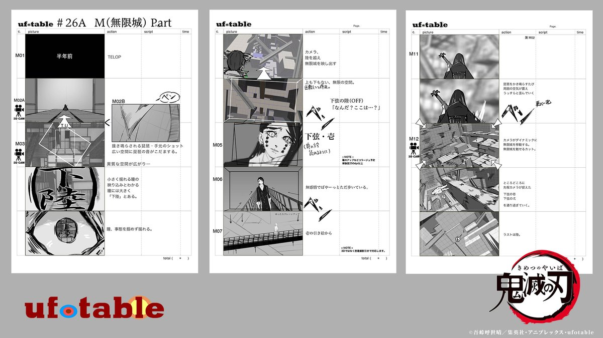

História
A mortal batalha entre demônios e humanos é o foco de Kimetsu no Yaiba, ou Demon Slayer, que já conquistou multidões de fãs. Jovens que se dedicam a caçar demônios passam por pesados treinos e desenvolvem diferentes poderes que podem ser vistos em cenas de tirar o fôlego do espectador.
Personagens
Por trás das câmeras
Um dos últimos grandes sucessos do Japão nos cinemas é o filme Demon Slayer: Mugen Train, que continua a saga dos personagens vista na 1ª temporada do anime Demon Slayer (Kimetsu no Yaiba, no original).
Embora tenha estreado com grande aclamação na América do Norte, o longa-metragem só chegou ao Brasil em 13 de maio, quinta-feira.
Mesmo com sequências impressionantes, momentos dramáticos potentes e um traço extremamente cuidadoso, é importante se atentar a algumas questões que a produção traz à tona. Além do mais, o filme está diretamente relacionado à série de anime, portanto, deve ser assistido antes do lançamento da 2ª temporada.
O ápice da animação, tanto no visual quanto no roteiro, veio no tal episódio 19 citado no começo da matéria, em que Tanjiro enfrentava o primeiro dos Doze Demônios da Lua em uma luta emocionante. No meio de tudo aquilo, o espectador ainda era surpreendido com algumas revelações do passado dos personagens principais.
A empolgação geral do público causou um efeito direto bem esperado: o êxito de vendas do mangá. Os volumes encadernados começaram a vender de forma explosiva e o interesse do público parecia aumentar com o passar dos episódios. A situação chegou num ponto em que está difícil encontrar os volumes nas livrarias japonesas! No lugar destinado aos volumes de Demon Slayer, o mais comum tem sido encontrar um aviso da livraria comunicando o esgotamento e pedindo paciência dos leitores até a reposição pela editora Shueisha.